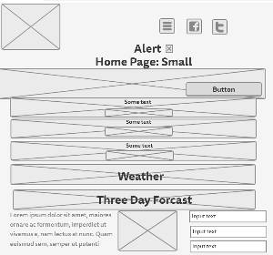
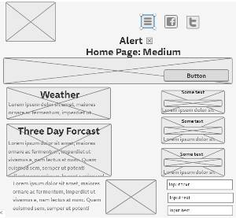
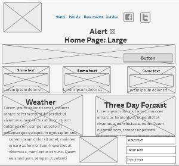
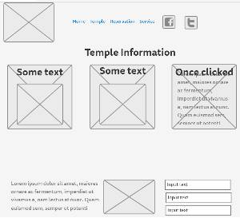
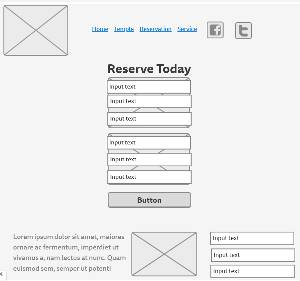
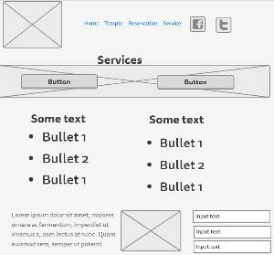
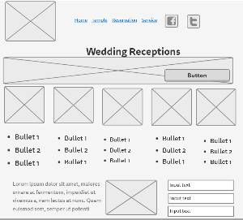
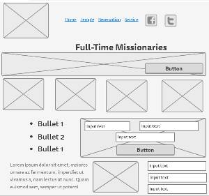

Temple Inn & Suites Site Plan
Home
Target Audience
Typography
Color Scheme
Wireframes
Wireframes
Home Page: Phone View (small)

Home Page: Tablet View (medium)

Home Page: Large Width Monitors (large)

Temple Page

Reservation Page

Services Page

Reception Page

Full-Time Missionary Page
